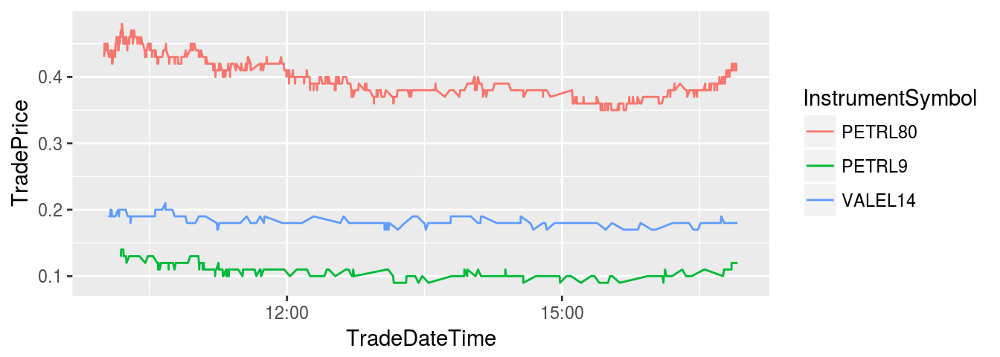

vignettes/ghfd-vignette-Trades.Rmd
ghfd-vignette-Trades.RmdRecently, Bovespa, the Brazilian financial exchange company, allowed external access to its ftp site. In this address one can find several information regarding the Brazilian financial system, including datasets with high frequency (tick by tick) trading data for three different markets: equity, options and BMF.
Downloading and processing these files, however, can be exausting. The dataset is composed of zip files with the whole trading data, separated by day and market. These files are huge in size and processing or aggregating them in a usefull manner requires specific knowledge for the structure of the dataset.
The package GetHFData make is easy to access this dataset directly by allowing the easy importation and aggregations of it. Based on this package the user can:
ghfd_get_ftp_contents
ghfd_get_available_tickers_from_ftp
ghfd_download_file
ghfd_get_HF_data
In the next example we will only use a local file from the package. Given the size of the files in the ftp and the CHECK process of CRAN, it makes sense to keep this vignette compact and fast to run. More details about the usage of the package can be found in my RBFIN paper.
Let’s assume you need to analize high frequency trading data for option contracts in a given date (2015-11-26). This file could be downloaded from the ftp using function ghfd_download_file, but it is already available locally within the package.
The first step is to check the available tickers in the zip file:
library(GetHFData)## Thank you for using GetHFData! More details about the package can be found in:
##
## http://bibliotecadigital.fgv.br/ojs/index.php/rbfin/article/view/64587/65702
##
## If applicable, please use the following citations in your research report. Thanks!
##
## APA:
## Perlin, M., Ramos, H. (2016). GetHFData: A R Package for Downloading and Aggregating High Frequency Trading Data from Bovespa. Brazilian Review of Finance, V. 14, N. 3.
##
## bibtex:
## @article{perlin2016gethfdata,
## title={GetHFData: A R Package for Downloading and Aggregating High Frequency Trading Data from Bovespa},
## author={Perlin, Marcelo and Henrique, Ramos},
## journal={Brazilian Review of Finance},
## volume={14},
## number={3},
## year={2016},
## publisher={Brazilian Society of Finance}
## }out.file <- system.file("extdata", 'NEG_OPCOES_20151126.zip', package = "GetHFData")
df.tickers <- ghfd_get_available_tickers_from_file(out.file)
print(head(df.tickers)) # show only 10## tickers n.obs
## 1 PETRL80 2882
## 2 PETRL9 985
## 3 VALEL14 754
## 4 VALEL43 679
## 5 PETRL70 514
## 6 PETRX80 507
## f.name
## 1 /home/msperlin/R/x86_64-pc-linux-gnu-library/3.5/GetHFData/extdata/NEG_OPCOES_20151126.zip
## 2 /home/msperlin/R/x86_64-pc-linux-gnu-library/3.5/GetHFData/extdata/NEG_OPCOES_20151126.zip
## 3 /home/msperlin/R/x86_64-pc-linux-gnu-library/3.5/GetHFData/extdata/NEG_OPCOES_20151126.zip
## 4 /home/msperlin/R/x86_64-pc-linux-gnu-library/3.5/GetHFData/extdata/NEG_OPCOES_20151126.zip
## 5 /home/msperlin/R/x86_64-pc-linux-gnu-library/3.5/GetHFData/extdata/NEG_OPCOES_20151126.zip
## 6 /home/msperlin/R/x86_64-pc-linux-gnu-library/3.5/GetHFData/extdata/NEG_OPCOES_20151126.zipIn df.tickers one can find the symbols available in the file and also the number of trades for each. Now, lets take the 3 most traded instruments in that day and check the result of the import process:
my.assets <- df.tickers$tickers[1:3] # ticker to find in zip file
type.matching <- 'exact' # defines how to match assets in dataset
start.time <- '10:00:00' # defines first time period of day
last.time <- '17:00:00' # defines last time period of day
my.df <- ghfd_read_file(out.file,
type.matching = type.matching,
my.assets = my.assets,
first.time = '10:00:00',
last.time = '17:00:00',
type.output = 'raw',
agg.diff = '15 min')## - Imported 18301 lines, 770 unique tickers
## -> Processing file - Found 4621 lines for 3 selected tickersLet’s see the first part of the imported dataframe.
head(my.df)## # A tibble: 6 x 10
## SessionDate InstrumentSymbol TradePrice TradedQuantity Tradetime
## <date> <chr> <dbl> <dbl> <chr>
## 1 2015-11-26 PETRL80 0.43 600 10:00:17…
## 2 2015-11-26 PETRL80 0.44 11300 10:00:28…
## 3 2015-11-26 PETRL80 0.45 2500 10:00:32…
## 4 2015-11-26 PETRL80 0.45 500 10:00:34…
## 5 2015-11-26 PETRL80 0.45 5000 10:00:36…
## 6 2015-11-26 PETRL80 0.45 1000 10:00:53…
## # ... with 5 more variables: CrossTradeIndicator <int>, BuyMember <dbl>,
## # SellMember <dbl>, TradeDateTime <dttm>, TradeSign <dbl>The columns names are self explanatory:
names(my.df)## [1] "SessionDate" "InstrumentSymbol" "TradePrice"
## [4] "TradedQuantity" "Tradetime" "CrossTradeIndicator"
## [7] "BuyMember" "SellMember" "TradeDateTime"
## [10] "TradeSign"Now lets plot the prices of all instruments:
library(ggplot2)
p <- ggplot(my.df, aes(x = TradeDateTime, y = TradePrice, color = InstrumentSymbol))
p <- p + geom_line()
print(p)
As we can see, this was a fairly stable day for the price of these option contracts.
In the last example we only used one date. The package GetHDData also supports batch downloads and processing of several different tickers using start and end dates. In this vignette we are not running the code given the large size of the downloaded files. You should try the next example in your own computer (just copy, paste and run the code in R).
In this example we will download files from the ftp for all stocks related to Petrobras (PETR) and Vale do Rio Doce (VALE). The data will be processed, resulting in a dataframe with aggregated data.
library(GetHFData)
first.time <- '11:00:00'
last.time <- '17:00:00'
first.date <- '2015-11-01'
last.date <- '2015-11-10'
type.output <- 'agg'
type.data <- 'trades'
agg.diff <- '15 min'
# partial matching is available
my.assets <- c('PETR','VALE')
type.matching <- 'partial'
type.market <- 'equity'
df.out <- ghfd_get_HF_data(my.assets =my.assets,
type.matching = type.matching,
type.market = type.market,
type.data = type.data,
first.date = first.date,
last.date = last.date,
first.time = first.time,
last.time = last.time,
type.output = type.output,
agg.diff = agg.diff)